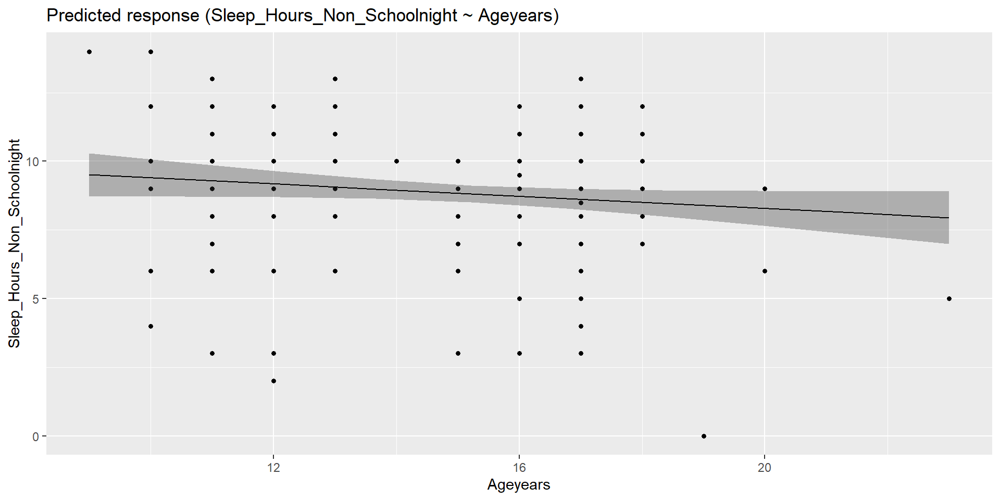
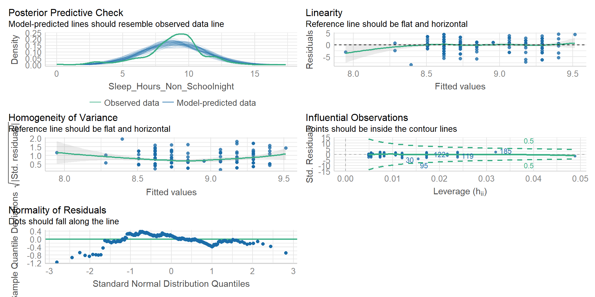
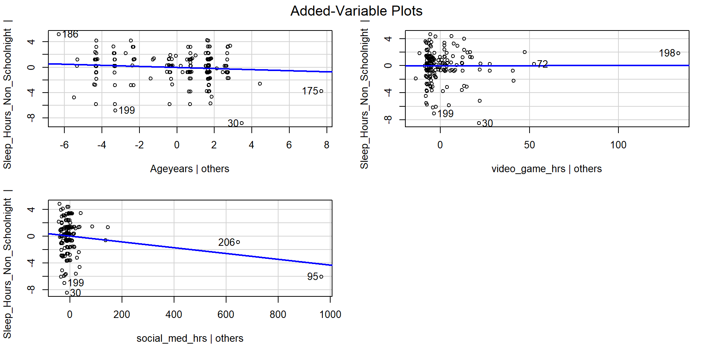
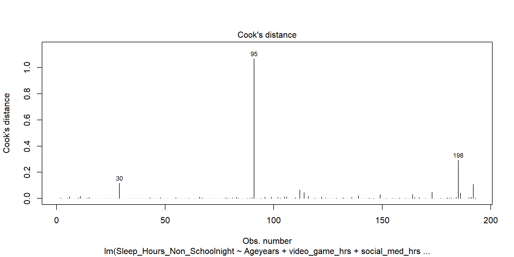
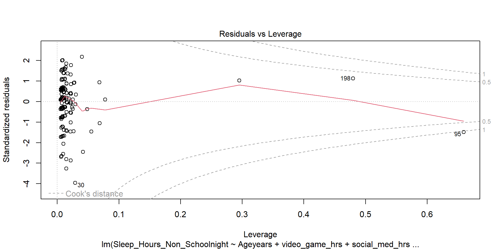
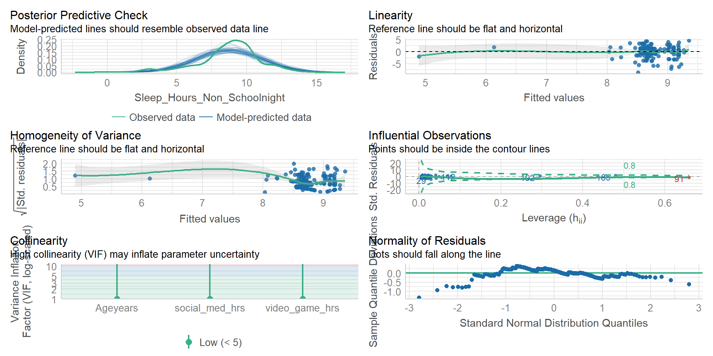

Multiple Regression: A story of betas
PSYC 640 - Fall 2023
Last Time
- Coefficient of Determination
- Coefficient of Alienation
Today…
More Regression (but more details)
- Omnibus test
Multiple Regression? Comparing Models?
Probably some Group work
Data for Today
school <- read_csv("https://raw.githubusercontent.com/dharaden/dharaden.github.io/main/data/example2-chisq.csv") %>%
mutate(Sleep_Hours_Non_Schoolnight = as.numeric(Sleep_Hours_Non_Schoolnight),
text_messages_yesterday = as.numeric(Text_Messages_Sent_Yesterday),
video_game_hrs = as.numeric(Video_Games_Hours),
social_med_hrs = as.numeric(Social_Websites_Hours)) %>%
filter(Sleep_Hours_Non_Schoolnight < 24) #removing impossible valuesExample
Call:
lm(formula = Sleep_Hours_Non_Schoolnight ~ Ageyears, data = school)
Residuals:
Min 1Q Median 3Q Max
-8.3947 -0.7306 0.3813 1.2694 4.5974
Coefficients:
Estimate Std. Error t value Pr(>|t|)
(Intercept) 10.52256 0.90536 11.623 <0.0000000000000002 ***
Ageyears -0.11199 0.05887 -1.902 0.0585 .
---
Signif. codes: 0 '***' 0.001 '**' 0.01 '*' 0.05 '.' 0.1 ' ' 1
Residual standard error: 2.204 on 204 degrees of freedom
(1 observation deleted due to missingness)
Multiple R-squared: 0.01743, Adjusted R-squared: 0.01261
F-statistic: 3.619 on 1 and 204 DF, p-value: 0.05854[1] 0.01742975# R2 for Linear Regression
R2: 0.017
adj. R2: 0.013Example

Example - easystats
Example - easystats Check_model
Inferential tests
NHST is about making decisions:
- these two means are/are not different
- this correlation is/is not significant
- the distribution of this categorical variable is/is not different between these groups
In regression, there are several inferential tests being conducted at once. The first is called the omnibus test – this is a test of whether the model fits the data.
Omnibus test
Historically we use the F distribution to estimate the significance of our model, because it works with our ability to partition variance.
What is our null hypothesis?
. . .
The model does not account for variance in \(Y\) (spoiler…ANOVA)
F Distributions and regression
F statistics are not testing the likelihood of differences; they test the likelihood of ratios. In this case, we want to determine whether the variance explained by our model is larger in magnitude than another variance.
Which variance?
\[\Large F_{\nu_1\nu_2} = \frac{\frac{\chi^2_{\nu_1}}{\nu_1}}{\frac{\chi^2_{\nu_2}}{\nu_2}}\]
\[\Large F_{\nu_1\nu_2} = \frac{\frac{\text{Variance}_{\text{Model}}}{\nu_1}}{\frac{\text{Variance}_{\text{Residual}}}{\nu_2}}\]
\[\Large F = \frac{MS_{Model}}{MS_{residual}}\]
The degrees of freedom for our model are
\[DF_1 = k\] \[DF_2 = N-k-1\]
Where k is the number of IV’s in your model, and N is the sample size.
Mean squares are calculated by taking the relevant Sums of Squares and dividing by their respective degrees of freedom.
\(SS_{\text{Model}}\) is divided by \(DF_1\)
\(SS_{\text{Residual}}\) is divided by \(DF_2\)
Call:
lm(formula = Sleep_Hours_Non_Schoolnight ~ Ageyears, data = school)
Residuals:
Min 1Q Median 3Q Max
-8.3947 -0.7306 0.3813 1.2694 4.5974
Coefficients:
Estimate Std. Error t value Pr(>|t|)
(Intercept) 10.52256 0.90536 11.623 <0.0000000000000002 ***
Ageyears -0.11199 0.05887 -1.902 0.0585 .
---
Signif. codes: 0 '***' 0.001 '**' 0.01 '*' 0.05 '.' 0.1 ' ' 1
Residual standard error: 2.204 on 204 degrees of freedom
(1 observation deleted due to missingness)
Multiple R-squared: 0.01743, Adjusted R-squared: 0.01261
F-statistic: 3.619 on 1 and 204 DF, p-value: 0.05854Mean square error (MSE)
AKAmean square residual and mean square within
unbiased estimate of error variance
- measure of discrepancy between the data and the model
the MSE is the variance around the fitted regression line
Note: it is a transformation of the standard error of the estimate (and residual standard error)!
Multiple Regression
Regression Equation
Going from this:
\[ \hat{Y} = b_0 + b_1X1 \]
To this
\[ \hat{Y} = b_0 + b_1X_1 + b_2X_2 + ... + b_kX_k \]
Regression coefficient values are now “partial” - Represents the contribution to all of outcome (\(\hat{Y}\)) from unique aspects of each \(X\)
Interpreting Coefficients
\[ \hat{Y} = b_0 + b_1X_1 + b_2X_2 + ... + b_kX_k \]
Focus on a specific predictor (e.g., \(X_1\))
For every 1 unit change in \(X_1\), there is a \(b_1\) unit change in \(Y\), holding all other predictors constant
Note: Properties of OLS still hold true
The sum of residuals will be 0
Each predictor (\(X\)) will be uncorrelated with the residuals
Example - Multiple Predictors
Let’s include another variable into our model to predict sleep
fit.2 <- lm(Sleep_Hours_Non_Schoolnight ~ Ageyears + video_game_hrs + social_med_hrs,
data = school)
summary(fit.2)
Call:
lm(formula = Sleep_Hours_Non_Schoolnight ~ Ageyears + video_game_hrs +
social_med_hrs, data = school)
Residuals:
Min 1Q Median 3Q Max
-8.5121 -0.7395 0.3097 1.3249 4.6458
Coefficients:
Estimate Std. Error t value Pr(>|t|)
(Intercept) 10.1267351 0.9845471 10.286 <0.0000000000000002 ***
Ageyears -0.0853584 0.0632637 -1.349 0.179
video_game_hrs 0.0005255 0.0111080 0.047 0.962
social_med_hrs -0.0042958 0.0018007 -2.386 0.018 *
---
Signif. codes: 0 '***' 0.001 '**' 0.01 '*' 0.05 '.' 0.1 ' ' 1
Residual standard error: 2.179 on 189 degrees of freedom
(14 observations deleted due to missingness)
Multiple R-squared: 0.03541, Adjusted R-squared: 0.0201
F-statistic: 2.313 on 3 and 189 DF, p-value: 0.07744Example - Coefficient interpretation
Example - Visualizing
How do we visualize this?
Example - Visualizing
How do we visualize this?
Holding Constant??? Wut
...
Coefficients:
Estimate Std. Error t value Pr(>|t|)
(Intercept) 10.1267351 0.9845471 10.286 <0.0000000000000002 ***
Ageyears -0.0853584 0.0632637 -1.349 0.179
video_game_hrs 0.0005255 0.0111080 0.047 0.962
social_med_hrs -0.0042958 0.0018007 -2.386 0.018 *
...The average amount of sleep decreases by 0.08 hours for every 1 year older the youth his holding the number of hours playing video games and the number of hours on social media constant.
The average amount of sleep decreases by 0.004 hours for every 1 hour of social media use holding age and hours of video game usage constant.
What does this mean?? Also can be called “controlling for” or “taking into account” the other variables
Language comes from experimental research in which they can keep one condition unchanged while manipulating the other
Holding Constant - “Controlling for”

Taken from @nickchk
Creating the Model
There can be many different ways in which we create and compare models with multiple predictors
- Simultaneous: Enter all variables in the model at once
- Usually the most conservative and defensible approach (unless there is theory to support a hierarchical approach)
- Hierarchically: Building a sequence of models where a single variable is included/excluded at each step
- This is hierarchical/stepwise regression. Different from HLM (Hierarchical Linear Modeling)
Model Selection (LSR 15.10)
How can we tell if one model is “better” than the other (it explains more variance in outcome)?
- Each predictor (or set of predictors) is investigated as to what it adds to the model when it is entered
- The order of the variables depends on an a priori hypothesis
The concept is to ask how much variance is unexplained by our model. The leftovers can be compared to an alternate model to see if the new variable adds anything or if we should focus on parsimony
Model Comparison Example
m.2 <- lm(Sleep_Hours_Non_Schoolnight ~ Ageyears + video_game_hrs,
data = school)
m.3 <- lm(Sleep_Hours_Non_Schoolnight ~ Ageyears + video_game_hrs + social_med_hrs,
data = school)
anova(m.2, m.3)...
Analysis of Variance Table
Model 1: Sleep_Hours_Non_Schoolnight ~ Ageyears + video_game_hrs
Model 2: Sleep_Hours_Non_Schoolnight ~ Ageyears + video_game_hrs + social_med_hrs
Res.Df RSS Df Sum of Sq F Pr(>F)
1 190 924.10
2 189 897.09 1 27.014 5.6912 0.01804 *
...Model Comparison - sjPlot
| Sleep Hours Non Schoolnight |
Sleep Hours Non Schoolnight |
|||||
| Predictors | Estimates | CI | p | Estimates | CI | p |
| (Intercept) | 9.81 | 7.86 – 11.76 | <0.001 | 10.13 | 8.18 – 12.07 | <0.001 |
| Ageyears | -0.07 | -0.20 – 0.06 | 0.274 | -0.09 | -0.21 – 0.04 | 0.179 |
| video game hrs | -0.00 | -0.02 – 0.02 | 0.949 | 0.00 | -0.02 – 0.02 | 0.962 |
| social med hrs | -0.00 | -0.01 – -0.00 | 0.018 | |||
| Observations | 193 | 193 | ||||
| R2 / R2 adjusted | 0.006 / -0.004 | 0.035 / 0.020 | ||||
Model Diagnostics
Checking the model (LSR 15.9)
Whenever we are looking at the regression model diagnostics, we are often considering the residual values. The types of residuals we can look at are:
Ordinary Residuals - Raw
Standardized Residuals
Studentized Residuals - Takes into account what the SD would have been with the removal of the \(i\)th observation
Model Checks - Outlier
We tend to look for various things that may impact our results through the lens of residuals
1) Outliers - variables with high Studentized Residuals

Model Checks - Leverage
We tend to look for various things that may impact our results through the lens of residuals
2) Leverage - variable is different in all ways from others (not just residuals)

Model Checks - Influence
We tend to look for various things that may impact our results through the lens of residuals
3) Influence - outlier with high leverage (Cook’s Distance)

Model Checks - Plots
Model Checks - Plots
Checking Collinearity
We need to check to see if our predictor variables are too highly correlated with each other
To do so we use variance inflation factors (VIF)
- There will be a VIF that is associated with each predictor in the model
- Interpreting VIF (link) - Starts at 1 and goes up
- 1 = Not Correlated
- 1-5 = Moderately Correlated
- 5+ = Highly Correlated
easystats making stats easy
Can check the model with a simple function
Rounding up Multiple Regression
It is a powerful and complex tool
Next time…
- More R fun
- Group work
Stop…Group Time